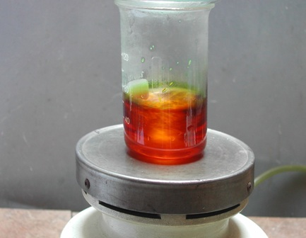
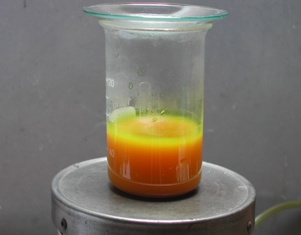
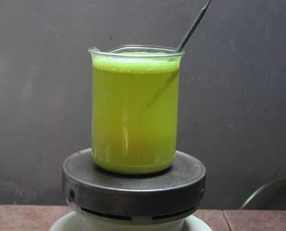
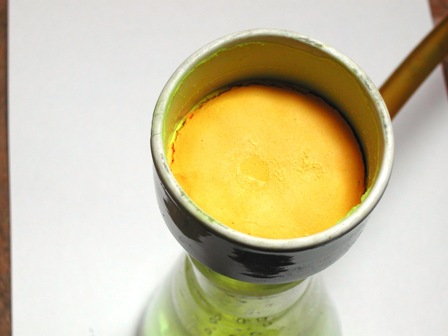
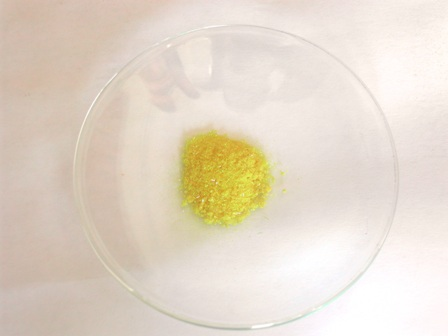

Ecco l'ultimo prodotto della serie, la 2,2',4,4',6,6'-esanitrodifenilammina ovvero dipicrilammina, col suo bel nome storico come piace a me.
Un gruppo fenile con tre bei gruppi nitrici simmetrici può per buona ragione chiamarsi "picrile"! E due picrili attaccati a un -NH non danno origine a una dipicrilammina?
E non è un bel nome? Se invece di una sostanza chimica fosse una femminuccia, non sarebbe una bella ragazza bionda ed esuberante?
Vabbè, lasciate che io veda qualche volta nelle sostanze chimiche delle inquietanti quanto innocenti analogie...
Ma l'esanitrodifenilammina è bella soprattutto perchè è un reattivo analitico organico per il potassio; sono sempre interessanti (perchè pochi!) i reattivi per i metalli alcalini, che tendono ad essere nei loro composti o quasi sempre solubili o quasi sempre impietosamente incolori.
Per questa sintesi mi sono basato sulla procedura di Prepchem (ho visto che deriva direttamente dal T.L.Davis, 1941), sito che propone una bella collezione di sintesi interessanti, e questa è una di quelle.

Materiale occorrente:
- 2,2',4,4'-tetranitrodifenilammina
- acido nitrico fumante (d. 1,5)
- acido solforico concentrato
- vetreria opportuna
Procedimento:
In becher di tipo alto e stretto da 150 ml si pongono 20 ml di HNO3 fumante (d. 1,50) e 20 ml di H2SO4 concentrato, coprendolo quando occorre con un vetrino da orologio per contenere al massimo gli irritanti fumi acidi.
Sono stato un po' abbondante con la solfonitrica perchè il suo eccesso certo non fa male quando per cacciar dentro due ulteriori gruppi nitrici negli anelli quando ce ne sono già quattro servono le picconate. (Loro non vogliono entrare? E noi spingiamo!)
Porre il becher su agitatore magnetico e aggiungere lentamente a freddo in piccole dosi 6g di tetranitrodifenilammina.


Durante le prime aggiunte la sostanza si scioglie e la miscela nitrante si colora in arancio marroncino, ma poi in seguito schiarisce e comincia a riprecipitare come solido giallo pallido.
Per aggiungere tutta l'ammina ho impiegato circa mezz'ora, controllando spesso la temperatura, che ho tenuto sempre sotto i 20 gradi.
In ogni caso andando lentamente e cautamente la reazione non è esotermica e la temp. tende pochissimo a salire.
Facendo freddo nel lab (questa sintesi è stata fatta in febbraio) ho poi mantenuto l'ambiente di reazione intorno ai 25-30° scaldandolo appena appena e sempre sotto agitazione; così è rimasto per tre buone ore.
Avvenuta la nitrazione, ho versato cautamente il contenuto in un becher con 200 ml di acqua fredda, filtrato su buchner e lavato con acqua fino ad esaurimento dell'acidità.


La dipicrilammina si presenta come una polvere microcristallina giallina simile al tetranitroderivato di partenza, che tende un po' ad impaccarsi quando è umida ed asciuga più lentamente delle sostanze da cui deriva.
Ho ottenuto 6,2 g di prodotto secco, pari ad una resa anche in questo caso dell'82%.
E' tossica e molto irritante, ed è senza ombra di dubbio la sostanza più amara e peggiore con cui io sia mai venuto in contatto, di gran lunga più cattiva per esempio della brucina o di qualsiasi altro nitroderivato.
Se non si mettono in atto TUTTE le precauzioni possibili quando si lavora con questa sostanza si finisce inevitabilmente per sentirne il sapore: ne bastano tracce veramente "molecolari" per essere rilevate, anche se (forse?) la mia è una ipersensibilità estrema verso questa sostanza.
Tant'è che questa ragazzaccia, da simpatica che mi era all'inizio, mi è diventata veramente insopportabile per la sua tendenza a sentirmela in bocca solo a guardarla.
Questo fenomeno non mi è mai successo in anni di sperimentazioni le più varie (va a finire che la rinchiudo in isolamento e butto via la chiave...).
Per il resto è del tutto stabile ed altre sue proprietà non sono qui di interesse.
E' pochissimo solubile in quasi tutti i solventi a parte l'acetone a caldo, nel quale un pochino si scioglie e dal quale ho provato a cristallizzarne un po', ottenendo dei bei cristallini aghiformi giallo limone.

L'ho quindi tenuta in maggioranza non ricristallizzata, ritenendola adeguata alle prove che mi riprometto di fare, e cioè l'analisi del potassio; un pizzico lo salificherò per vedere un bel sale rosso di questo metallo, uno dei rari insolubili.
Ne riparliamo fra un po' di tempo.